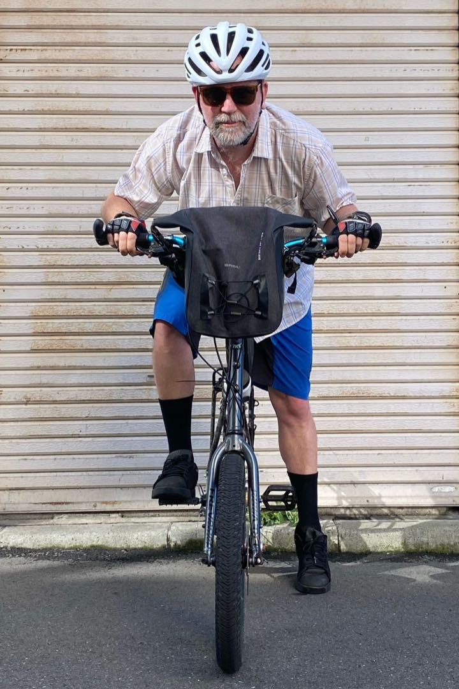
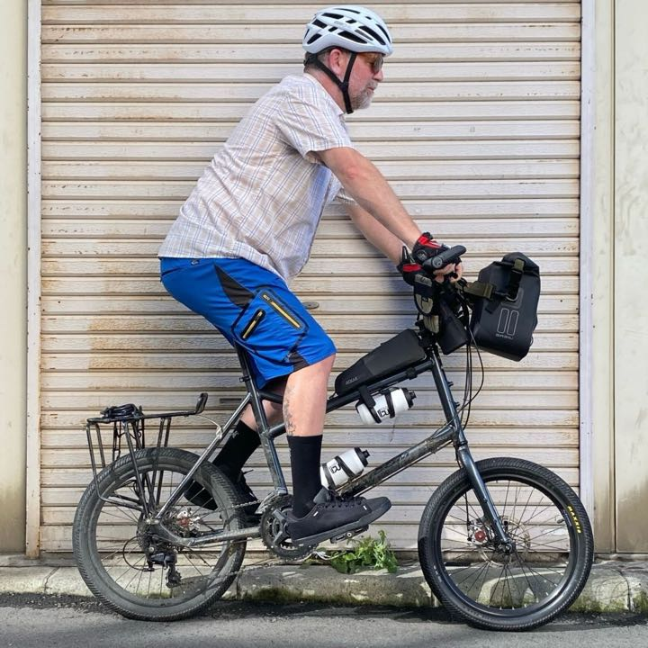
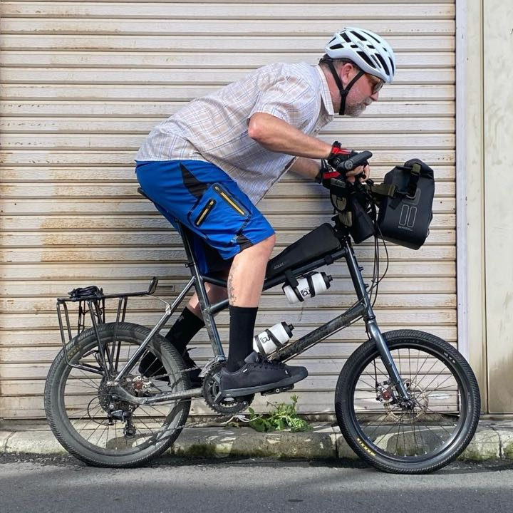
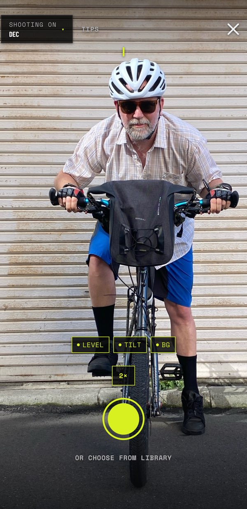
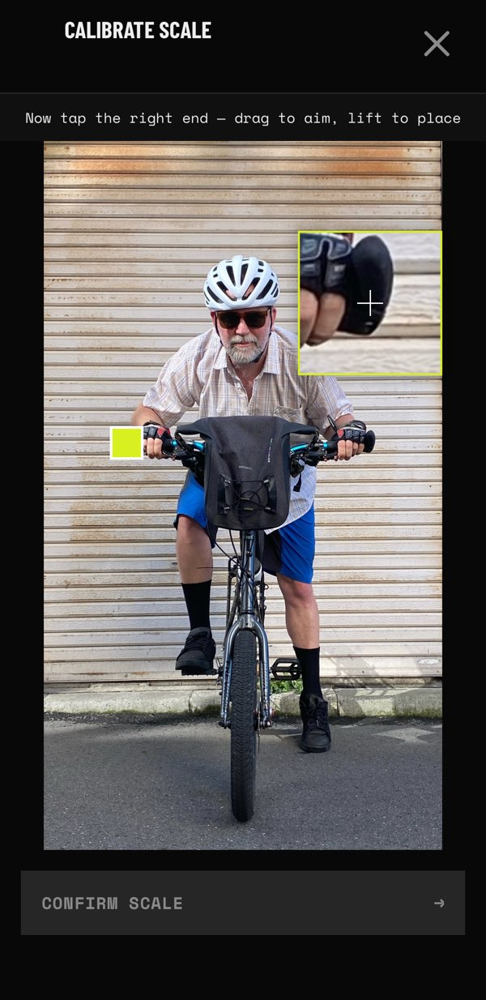

Get Tucked
Frontal area for your whole loaded bike, in cm², from a single photo.
US$9.99 · one-time · no subscription

Get Tucked measures your frontal area (the surface the wind sees) from one photo against a plain wall. It measures the whole loaded bike, not just your body, so you can see what your bags, your bars, and your position each cost you. When a difference is too small to trust, the app says so.
Same rider. Two positions.
A second photo from the side reads your pose: torso angle, hip angle, and how far your head drops. The head-on photo gives the area. The side-on photo shows what you changed to get it.


Point, tap, compare.


A smaller silhouette costs less time.
Drag a guess at how much frontal area a change might save (a tucked elbow, a smaller bar bag, dropped hoods), then see what that implies over 200 km at a typical loaded-touring cruise.
P = v × (½ × ρ × CdA × v² + Crr × m × g)
Illustrative. Assumes a 30 km/h flat cruise, no wind, sea-level air: drag coefficient 0.7, 80 kg rider + bike + kit, rolling resistance 0.005. The app measures your actual number.
A difference smaller than the noise isn't a result.
Every reading carries an error bar of at least ±3%, wider when a live shot's three frames disagree. The app checks every comparison against the combined error of both readings. If two setups differ by less than that floor, the app says indistinguishable, not “1.8% better.”
The honest FAQ.
What do I need?
An iPhone XS or newer (any iPhone that runs iOS 17), and a plain, evenly lit wall. You enter your handlebar width once. That's your ruler.
How long does it take?
About a minute per shot. Take the photo, tap the two bar ends and the wheel, read the number.
Is there an Android version?
No. Get Tucked is native iOS. The segmentation runs on Apple's on-device vision, so nothing ever leaves your phone.
Do I need a wind tunnel?
No. A phone and a wall. The one rule is a clean, evenly lit background. That's the difference between a sharp silhouette and a guess.
How accurate is it?
Every reading carries an error bar of at least ±3%, and the app tells you when a difference is smaller than the combined error of both readings. It answers “did this change anything?” better than “what's my exact number?” Read the method.
What does it cost?
US$9.99, once. No subscription, no account, no data collection. Works offline.
- Runs entirely on your phone
- No account, no cloud
- Your photos never leave the device
- Pay once, no subscription
US$9.99 · one-time · no subscription
No analytics, not even on this page. In this market, that list is the feature list.
Read how we measure, and what we don't claim →